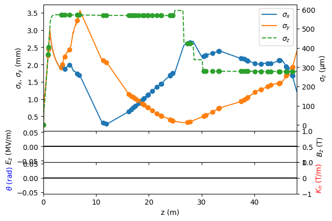

Getting Started
This notebook will show how to set up SIMBA, load in a LAURA object and settings for tracking, and show how to plot the results.
It is assumed that a LAURA lattice directory and a SimCodes directory have been prepared and set with environment variables (see the docs here).
import os
import numpy as np
import matplotlib.pyplot as plt
import simba.Framework as fw # noqa E402
from simba.Framework import load_directory # noqa E402
import simba.Modules.Beams as rbf # noqa E402
import simba.Modules.Twiss as rtf # noqa E402
# Define a new framework instance, in directory 'getting_started'.
# "clean" will empty (delete everything!) in the directory if true
# "verbose" will print a progressbar if true
framework = fw.Framework(
simcodes=os.environ["SIMCODES"],
directory="./getting_started",
master_lattice=os.environ["LATTICE_LOCATION"],
generator_defaults="clara.yaml",
clean=False,
verbose=False
)
scaling = 4
Preparing the simulation and tracking
Load a lattice definition file from LATTICE_LOCATION.
framework.loadSettings("Lattices/clara400_v13_combined.def")
startline = "generator"
endline = "Linac"
Change all lattice codes to ASTRA/Elegant/GPT/Ocelot with exclusions (injector can only be done in ASTRA/GPT).
framework.change_Lattice_Code("All", "elegant", exclude=["injector400"])
# Individual lattice lines defined in the settings file can also be changed,
# i.e. framework.change_Lattice_Code("VBC", "elegant")
This is the code that generates the laser distribution (ASTRA or GPT)
framework.change_generator("ASTRA")
Load a starting laser distribution setting
framework.generator.load_defaults("clara_400_2ps_Gaussian")
Set the thermal emittance for the generator
framework.generator.thermal_emittance = 0.0005
This is a scaling parameter. it defines the number of particles to create at the gun (this is “ASTRA generator” which creates distributions). The space charge 3D mesh in ASTRA/GPT performs best if the number of particles is a power of 8.
framework.generator.number_of_particles = 2 ** (3 * scaling)
Modify some lattice parameters
framework["CLA-S02-MAG-QUAD-01"].k1l += 0.1
framework["CLA-L03-LIN-CAV-01"].phase += 5
framework["bunch_compressor"].set_angle(0.090)
Generate and track the bunch
framework.track(startfile=startline, endfile=endline)
The outputs from the simulation can now be loaded as follows, and we can plot the beam evolution along the line
fwdir = load_directory("./getting_started", beams=True)
plt1, fig1, ax1 = fwdir.plot(include_layout=False, include_particles=True, ykeys=['sigma_x', 'sigma_y'], ykeys2=['sigma_z'])

import shutil
shutil.rmtree('./getting_started/')